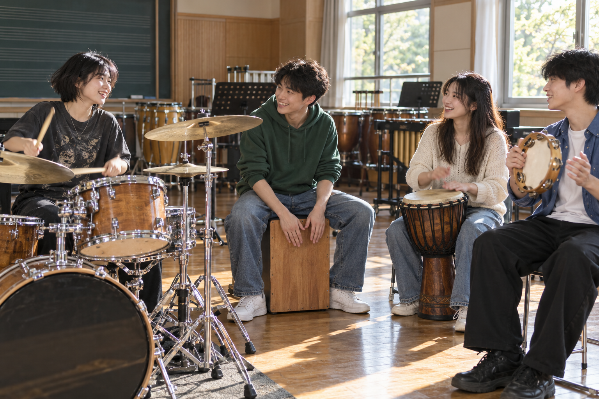

社团简介 | 活动安排 | 风采展示 | 社员故事 | 在线报名
欢迎来到打击乐社。在这里，我们希望用节奏连接不同年级、不同专业和不同性格的同学，让每个人都能找到表达自己的方式。打击乐并不只是舞台上响亮的鼓声，它也可以是指尖轻敲桌面的律动，是双手交替拍出的节拍，是一群人相互倾听后逐渐形成的默契。我们欢迎已经学过架子鼓、手鼓或其他打击乐器的同学，也欢迎第一次接触乐器的新朋友。加入社团之前，你不需要准备一份精彩的演奏视频，更不需要证明自己拥有特别突出的天赋。愿意认真聆听、按时练习，并和伙伴一起完成一首作品，就是很好的起点。
打击乐器的世界远比想象中丰富。架子鼓可以支撑乐队的整体节奏，木箱鼓适合与清新的歌声搭配，手鼓能够带来灵活而富有生命力的音色，沙锤、铃鼓和三角铁也能在合适的位置为音乐增加细节。社团会结合成员兴趣和器材条件介绍不同乐器，让大家认识它们的基本结构、发声方式和使用场景。我们不把某一种风格当成唯一标准，希望你既能接触流行音乐中的稳定律动，也能感受民谣伴奏中的轻快变化。通过比较不同的节奏和音色，大家能够逐渐理解，同一首歌曲也可以拥有多种演绎方式。
对于没有基础的成员，我们会从最容易上手的内容开始。第一次练习可能只是跟随节拍器拍手，认识四拍子的强弱关系，或者尝试左右手均匀交替。等到基础动作逐渐稳定，再学习简单的节奏型、休止符和速度变化。我们重视循序渐进，不会要求初学者一开始就模仿复杂的演奏片段。遇到难点时，可以把一个动作拆成几个小步骤，先放慢速度，再慢慢连接起来。每个人的进度不同，练得快的同学可以继续探索，暂时跟不上的同学也可以放心提问。我们希望练习室里有耐心的交流，而不是让人紧张的比较。
对于已经具备演奏经验的成员，社团同样希望提供新的挑战。你可以参与合奏编配，尝试为一首熟悉的歌曲设计鼓点，也可以协助组织节奏训练，与其他乐器的同学合作。一个人演奏时需要关注自己的技术，进入合奏以后，还需要留意旋律、和声、速度以及其他成员的呼吸。学会在需要的时候突出节奏，也学会在需要的时候适当收敛，都是音乐交流的重要部分。我们鼓励有经验的成员分享自己的练习方法，同时尊重不同的演奏习惯，让经验成为帮助伙伴的桥梁，而不是划分距离的标准。
除了日常训练，打击乐社也重视共同参与的过程。活动前，我们一起确认器材和场地；排练中，我们轮流记录节奏上的问题；活动结束后，我们共同整理设备、清点配件并恢复教室环境。器材的使用需要注意安全和音量，练习也应该考虑周围同学的学习与休息。我们会根据实际条件安排练习时段，提倡合理分配时间，让音乐成为校园生活的充实部分。社团里的责任并不只属于负责人，每一次认真签到、及时沟通和主动收拾，都能够让大家拥有更舒适、更可靠的活动环境。
我们也希望打击乐社成为一个可以结识朋友的地方。也许你和身边的伙伴来自完全不同的专业，平时很少有机会在课堂上相遇，却能因为同一段旋律坐在一起讨论。你可以分享自己最近喜欢的歌曲，可以讲述第一次上台时的紧张，也可以在一次练习结束后，为伙伴终于完成一个节奏型而鼓掌。音乐中的进步有时十分细小，需要别人认真看见。我们愿意珍惜这些小小的变化，让每个人都感受到自己的努力被尊重，也让大家在合作中学会表达、倾听和理解。
如果你正在寻找一种能够长期坚持的兴趣，或者想给自己的校园生活增加一点新的声音，欢迎来认识我们。你可以先从一次体验活动开始，观察不同的乐器，听听社员的分享，再决定自己想参与的方向。我们期待与你共同完成的不只是一场演出，更是一段不断尝试、相互支持的学习经历。你可能暂时不知道自己适合哪一种乐器，也可能还不敢在别人面前展示，但这些都不会妨碍你迈出第一步。让我们从最简单的一拍开始，在稳定的节奏里积累信心，在共同的练习中认识彼此，用属于自己的声音记录校园时光。
| 打击乐社 2026 年春季学期活动安排表 | |||
|---|---|---|---|
| 活动时间 | 活动名称 | 活动地点 | 活动内容 |
| 第 2 周周五 | 新成员见面会 | 学生活动中心 201 教室 | 认识社员，体验拍手接节奏 |
| 第 3 周周五 | 打击乐器基础教学公开课 | 学习握鼓棒和四拍节奏 | |
| 第 6 周周五 | 打击乐小组合奏 | 音乐排练厅 | 用小军鼓和手鼓合作完成一首乐曲 |
下面是一张往届校园音乐会的照片示意。点击图片，可以查看更详细的活动介绍页面。 在实际使用中，请根据自己的图片文件名进行修改。

图中为上学期“夏日之声”校园音乐会上，吉他社成员的集体演出场景。 平时的训练与排练，都会在正式演出中得到充分的展示机会。
下面示例演示如何在页面中嵌入一段吉他社宣传视频。 如果暂时没有真实的视频文件，可以先保留代码结构，待以后再替换为真实文件路径。
第一次来到打击乐社活动室的时候，小林站在门口犹豫了很久。教室里传出整齐的鼓点，几位同学正在配合一段熟悉的旋律，而他连鼓棒应该怎么拿都不清楚。他原本只是路过招新摊位时被一段演奏吸引，报名以后却开始担心自己会拖慢大家的进度。负责接待的社员发现了他的迟疑，递给他一副鼓棒，又把一块练习垫放在桌上，说今天可以先不碰架子鼓，只跟着大家拍四下。这个简单的邀请让他松了一口气，他终于在靠近窗边的位置坐了下来。
第一段练习比小林想象中更难。明明只是左右手交替敲击，他却总是在右手之后停顿一下，越想跟上节拍器，动作就越僵硬。坐在旁边的学姐没有催促，而是把速度调慢，先带着他用声音数拍子，再让他只练习其中两拍。反复几次以后，他发现自己的手开始能够自然地交替，原来混在一起的声音也逐渐有了清楚的间隔。那天离开之前，他并没有学会完整的歌曲，却第一次意识到，学习乐器不一定要立刻表现出色，能够比刚进门时多理解一点，就已经值得高兴。
后来，小林给自己制定了一个并不复杂的练习计划。每次先检查动作，再从较慢的速度开始，等到能够连续稳定完成以后才提高一点速度。他把容易出现问题的位置写进笔记，不再因为某一次敲错就直接放弃。有时课程比较忙，他只能用很短的时间练习，于是会先在心里默数节拍，再利用空闲回顾上一节活动的内容。伙伴们也会交流各自遇到的难点，有人正在纠正持棒动作，有人在练习两只手不同的力度。发现大家都在解决问题以后，他不再把自己的失误看成特别丢脸的事情。
真正让小林紧张的是第一次小组合奏。个人练习时，他只需要注意自己的声音；坐到小组里以后，还要听见其他乐器，并按照约定的位置进入。第一次连接整段音乐时，他提前敲出了一个重音，大家因此停了下来。他低着头说了句抱歉，以为接下来会听见批评，组长却先问是不是开始的提示不够清楚。大家重新约定了数拍方式，又把容易混淆的位置单独练了几遍。那次排练让他明白，合奏中出现问题时，重要的是一起找到原因，而不是让某个人独自承担所有紧张。
随着练习逐渐稳定，小组开始准备一次简短的交流展示。小林负责的部分并不复杂，却需要在整个作品中保持清楚的节奏。展示前一天，他仍然有些担心，于是伙伴们陪他重新走了一遍开始、转换和结束的位置，还提醒他如果紧张就先留意自己的呼吸。轮到小组上场时，他握着鼓棒，手心有一点出汗，但听到大家一起数出的准备拍后，熟悉的练习过程慢慢浮现出来。他没有一直盯着观众，而是把注意力放在伙伴的动作和音乐的进行上，终于完整地完成了这次演奏。
演奏结束后，最让小林开心的并不是掌声有多响，而是回头时看见伙伴们都在笑。有人说中间的衔接比排练时还自然，有人提醒下次可以尝试更轻一些的结尾。他们一边整理器材，一边讨论刚才的感受，把需要改进的地方和已经做好的部分都认真记了下来。后来，活动室又迎来一位不敢拿起鼓棒的新同学，小林想起自己第一次站在门口的样子，主动把练习垫移到旁边，说可以先从最简单的四拍开始。他发现，曾经接受过的耐心，也能够通过自己的行动继续传递下去。
对小林来说，加入打击乐社并没有让生活突然发生巨大的变化。课程仍然需要认真完成，复杂的节奏也依然需要慢慢练习，但他多了一个可以投入兴趣、认识朋友和观察自己进步的地方。他学会把一个很难的目标拆成可以完成的小步骤，也学会在遇到问题时主动请教，而不是只在心里否定自己。如果你也曾因为没有基础而犹豫，希望这个故事能够给你一点勇气。你不必先成为很厉害的演奏者，才有资格走进活动室。愿意开始，愿意练习，愿意与伙伴一起倾听，就已经能够开启一段属于自己的节奏故事。
感谢你对打击乐社的关注。在准备报名之前，你可以先阅读社团简介、活动安排和社员故事，了解我们希望一起完成怎样的事情。报名并不是一次必须展现专业能力的考试，而是帮助社团认识新成员、安排体验活动和了解学习需求的开始。无论你已经拥有演奏经验，还是从来没有正式接触过乐器，都可以认真介绍自己的情况。我们更希望看见真实的兴趣和清楚的表达，而不是一份刻意写得十分精彩却无法反映实际情况的介绍。请根据自己的想法和时间安排作出选择。
填写姓名、年级和联系方式时，请仔细检查内容是否准确。姓名便于活动签到和分组，年级有助于了解不同同学的课程安排，手机或邮箱则用于发送与社团活动有关的通知。联系方式应当填写自己能够正常接收消息的内容，避免因为输入错误而错过活动信息。报名过程中如果需要了解某项信息的用途，可以先向负责招新的同学咨询。与社团活动无关的敏感信息不应当随意提交，公开展示报名情况时也不应当直接公开个人手机号码等内容，让交流建立在尊重个人信息的基础上。
关于是否具备打击乐基础，请按照实际经历填写。如果从未学习过，可以直接说明自己是零基础；如果曾经接触过架子鼓、手鼓、木箱鼓或其他乐器，也可以简单介绍学习时间和目前能够完成的内容。基础信息主要用于安排体验和练习，不应当成为成员之间相互比较的标签。你也不需要为了让自己看起来更合适而夸大经历。一个清楚的自我说明能够帮助带练的同学选择适合你的起点，让有经验的人得到新的挑战，也让刚开始学习的人获得足够的解释和练习机会。
兴趣方向可以结合自己的喜好选择，不必在报名时就确定唯一目标。有的同学喜欢舞台演奏，希望逐渐掌握稳定的伴奏；有的同学对手鼓和节奏互动感兴趣，想体验不同音色；还有同学愿意参与摄影、视频整理、文字记录或活动组织。一个社团能够顺利开展活动，需要不同能力的伙伴共同参与。你可以选择多个感兴趣的方向，并在之后的体验中继续调整。暂时不了解各种乐器也没有关系，可以先说明自己喜欢的音乐风格，再通过实际观察找到更具体的兴趣。
自我介绍不需要使用复杂的语言，可以从三个方面展开：为什么注意到打击乐社，希望在社团中学习什么，以及愿意为共同活动付出怎样的努力。你可以写一首让自己印象深刻的歌曲，也可以讲讲曾经参加校园活动的经历。如果没有相关经历，可以直接说明自己想尝试一项新的兴趣，或者希望认识能够一起练习的朋友。介绍的重点是让负责招新的同学更好地理解你，而不是把每个人写成同一种样子。真诚、具体的表达通常比宽泛的口号更有帮助，也更容易成为之后交流的起点。
对于是否服从活动安排，请在了解实际情况后认真选择。共同排练需要大家协商时间、遵守场地规定并及时沟通，但合理的课程冲突和个人情况也应当受到尊重。能够参加活动时，请尽量按时到场；确实无法参加时，应当提前说明，方便调整分组和器材安排。不要为了完成一次报名就作出自己难以长期坚持的承诺，也不必因为偶尔存在时间冲突就完全放弃兴趣。我们希望成员在学业、休息和社团活动之间保持合理平衡，通过清楚的沟通形成可靠的合作关系。
提交报名信息之前，请再次检查各项内容，确认选择符合自己的真实情况。如果使用重置功能，需要留意已经填写的内容会被清空，避免误操作后重复输入。报名之后，可以继续关注招新通知，了解体验活动的时间、地点和需要携带的物品，也可以提前准备想要咨询的问题。第一次见面时不用急着证明自己，只要愿意倾听、交流和动手尝试，就能够逐渐熟悉这个集体。我们期待在未来的活动中与你相遇，从简单而清楚的一拍开始，把兴趣变成可以持续练习的行动，也把一次报名变成一段值得记住的校园经历。
提交表单后，如需修改信息，可以再次填写并提交最新的一份。
校园吉他社 · 2025 招新示例网页（教学参考用）
本页面仅作为 HTML 基础实验的示例代码。